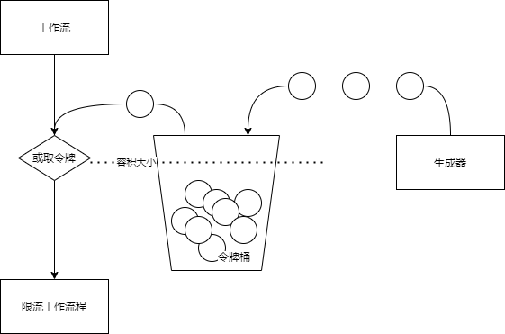

<!DOCTYPE html>
<html lang class="loading">
<head><meta name="generator" content="Hexo 3.8.0">
    <meta charset="UTF-8">
    <meta http-equiv="X-UA-Compatible" content="IE=edge,chrome=1">
    <meta name="viewport" content="width=device-width, minimum-scale=1.0, maximum-scale=1.0, user-scalable=no">
    <title>令牌桶算法的java实现-并发安全+可选阻塞+提取工具类 - Linco</title>
    <meta name="apple-mobile-web-app-capable" content="yes">
    <meta name="apple-mobile-web-app-status-bar-style" content="black-translucent">
    <meta name="google" content="notranslate">
    <meta name="keywords" content="Linco, Blog,"> 
    <meta name="description" content="令牌桶是最常用的网络和业务限流算法, 核心目的是细粒度的控制数据流规模, 防止恶意套取或过度使用接口和功能等
​    
令牌桶算法声明一个有限大小的容器, 按特定的速率往容器中添加令牌. 限制程序,"> 
    <meta name="author" content="Linco"> 
    <link rel="alternative" href="atom.xml" title="Linco" type="application/atom+xml"> 
    <link rel="icon" href="/img/icon.png"> 
    <link rel="stylesheet" href="//cdn.jsdelivr.net/npm/gitalk@1/dist/gitalk.css">
    <link rel="stylesheet" href="/css/diaspora.css">

</head>
</html>
<body class="loading">
    <span id="config-title" style="display:none">Linco</span>
    <div id="loader"></div>
    <div id="single">
    <div id="top" style="display: block;">
    <div class="bar" style="width: 0;"></div>
    <a class="icon-home image-icon" href="javascript:;" data-url></a>
    <div title="播放/暂停" class="icon-play"></div>
    <h3 class="subtitle">令牌桶算法的java实现-并发安全+可选阻塞+提取工具类</h3>
    <div class="social">
        <!--<div class="like-icon">-->
            <!--<a href="javascript:;" class="likeThis active"><span class="icon-like"></span><span class="count">76</span></a>-->
        <!--</div>-->
        <div>
            <div class="share">
                <a title="获取二维码" class="icon-scan" href="javascript:;"></a>
            </div>
            <div id="qr"></div>
        </div>
    </div>
    <div class="scrollbar"></div>
</div>

    <div class="section">
        <div class="article">
    <div class="main">
        <h1 class="title">令牌桶算法的java实现-并发安全+可选阻塞+提取工具类</h1>
        <div class="stuff">
            <span>十二月 15, 2021</span>
            
  <ul class="post-tags-list"><li class="post-tags-list-item"><a class="post-tags-list-link" href="/tags/分布式/">分布式</a></li><li class="post-tags-list-item"><a class="post-tags-list-link" href="/tags/项目应用/">项目应用</a></li></ul>


        </div>
        <div class="content markdown">
            <p>令牌桶是最常用的网络和业务限流算法, 核心目的是细粒度的控制数据流规模, 防止恶意套取或过度使用接口和功能等</p>
<p>​    </p>
<p>令牌桶算法声明一个有限大小的容器, 按特定的速率往容器中添加令牌. 限制程序处理到限速的位置时, 只有从容器中拿到令牌才能继续操作, 而被拿走的令牌不放回容器中, 而是永远消失</p>
<p></p>
<p>​    </p>
<p>对比计数算法和漏桶算法, 令牌桶算法多数场景下更贴近实际需要</p>
<table>
<thead>
<tr>
<th></th>
<th>精确度</th>
<th>时效性</th>
<th>突发流量</th>
</tr>
</thead>
<tbody>
<tr>
<td><em>计数器</em></td>
<td>低</td>
<td>实时</td>
<td>不支持</td>
</tr>
<tr>
<td><em>漏桶</em></td>
<td>极高</td>
<td>延时</td>
<td>不支持</td>
</tr>
<tr>
<td><em>令牌桶</em></td>
<td>高</td>
<td>实时</td>
<td>支持</td>
</tr>
</tbody>
</table>
<p>​    </p>
<p>上面的令牌桶算法提供了一个思维模型, 然而在实际编程中, 这个模型可以大幅度简化从而提升性能</p>
<p>​    </p>
<p>首先是令牌容器, 令牌功能都是一样的, 我们不需要保存令牌本身, 所以也不需要提供一个内存容器来保存令牌, 只需要一个数字标记现有令牌数量</p>
<p>​    </p>
<p>其次, 令牌生成不需要安排实际的过程, 我们已知令牌数量n=生成速度v*时间t, 只需要在使用令牌的时候查询距离上次生成令牌过去多长时间, 就能够得知期间理应生成多少令牌, 新生成的令牌加上原有的令牌数就是系统理论上的令牌数量, 而如果令牌数量超出容器大小,则使用容器大小作为当前的令牌数量</p>
<p>​    </p>
<p>编写工具类, 简单实现上述流程, 同时加入并发控制</p>
<figure class="highlight java"><table><tr><td class="gutter"><pre><span class="line">1</span><br><span class="line">2</span><br><span class="line">3</span><br><span class="line">4</span><br><span class="line">5</span><br><span class="line">6</span><br><span class="line">7</span><br><span class="line">8</span><br><span class="line">9</span><br><span class="line">10</span><br><span class="line">11</span><br><span class="line">12</span><br><span class="line">13</span><br><span class="line">14</span><br><span class="line">15</span><br><span class="line">16</span><br><span class="line">17</span><br><span class="line">18</span><br><span class="line">19</span><br><span class="line">20</span><br><span class="line">21</span><br><span class="line">22</span><br><span class="line">23</span><br><span class="line">24</span><br><span class="line">25</span><br><span class="line">26</span><br><span class="line">27</span><br><span class="line">28</span><br><span class="line">29</span><br><span class="line">30</span><br><span class="line">31</span><br><span class="line">32</span><br><span class="line">33</span><br><span class="line">34</span><br><span class="line">35</span><br><span class="line">36</span><br><span class="line">37</span><br><span class="line">38</span><br><span class="line">39</span><br><span class="line">40</span><br><span class="line">41</span><br><span class="line">42</span><br><span class="line">43</span><br><span class="line">44</span><br></pre></td><td class="code"><pre><span class="line"><span class="keyword">public</span> <span class="class"><span class="keyword">class</span> <span class="title">TokenPoolUtil</span> </span>&#123;</span><br><span class="line"></span><br><span class="line">    <span class="comment">// 最近令牌生成时间</span></span><br><span class="line">    <span class="keyword">private</span> <span class="keyword">static</span> <span class="keyword">long</span> lastTimestamp = System.currentTimeMillis();</span><br><span class="line">    <span class="comment">// 当前数量</span></span><br><span class="line">    <span class="keyword">private</span> <span class="keyword">static</span> <span class="keyword">final</span> AtomicInteger total = <span class="keyword">new</span> AtomicInteger(GlobalConfigHolder.bucketSize);</span><br><span class="line"></span><br><span class="line">    <span class="function"><span class="keyword">public</span> <span class="keyword">static</span> <span class="keyword">synchronized</span> <span class="keyword">boolean</span> <span class="title">acquire</span><span class="params">()</span> </span>&#123;</span><br><span class="line">        <span class="keyword">if</span> (total.get() &gt; <span class="number">0</span>) &#123;</span><br><span class="line"><span class="comment">//          System.out.println("total: " + total.get());</span></span><br><span class="line">            total.decrementAndGet();</span><br><span class="line">            <span class="keyword">return</span> <span class="keyword">true</span>;</span><br><span class="line">        &#125;</span><br><span class="line">        <span class="keyword">long</span> current = System.currentTimeMillis();</span><br><span class="line">            <span class="comment">// 小数四舍五入, 否则每次丢失精度的一点时间间隙都不被计入令牌产出时间</span></span><br><span class="line">            <span class="keyword">long</span> generated = Math.round((current - lastTimestamp) * GlobalConfigHolder.bucketFrequency / <span class="number">1000f</span>);</span><br><span class="line">            <span class="keyword">if</span> (generated &gt; <span class="number">0</span>) &#123;</span><br><span class="line"><span class="comment">//              System.out.println("generated: " + generated);</span></span><br><span class="line">                total.set(generated &gt; GlobalConfigHolder.bucketSize? GlobalConfigHolder.bucketSize:(<span class="keyword">int</span>)generated- <span class="number">1</span>);</span><br><span class="line">                lastTimestamp = current;</span><br><span class="line">                <span class="keyword">return</span> <span class="keyword">true</span>;</span><br><span class="line">            &#125;</span><br><span class="line">        <span class="keyword">return</span> <span class="keyword">false</span>;</span><br><span class="line">    &#125;</span><br><span class="line"></span><br><span class="line">    <span class="comment">/**</span></span><br><span class="line"><span class="comment">     * 阻塞式获取令牌</span></span><br><span class="line"><span class="comment">     * */</span></span><br><span class="line">    <span class="function"><span class="keyword">public</span> <span class="keyword">static</span> <span class="keyword">void</span> <span class="title">syncAcquire</span><span class="params">()</span> </span>&#123;</span><br><span class="line">        <span class="keyword">while</span> (!acquire()) &#123;</span><br><span class="line">            <span class="keyword">synchronized</span> (total) &#123;</span><br><span class="line">                <span class="keyword">try</span> &#123;</span><br><span class="line">                    <span class="comment">// 这里的等待超时时间可能需要结合算法优化</span></span><br><span class="line">                    total.wait(<span class="number">10</span>);</span><br><span class="line">                &#125; <span class="keyword">catch</span> (InterruptedException e) &#123;</span><br><span class="line">                    <span class="keyword">throw</span> <span class="keyword">new</span> RuntimeException(e);</span><br><span class="line">                &#125;</span><br><span class="line">            &#125;</span><br><span class="line">        &#125;</span><br><span class="line">        <span class="keyword">synchronized</span> (total) &#123;</span><br><span class="line">            total.notifyAll();</span><br><span class="line">        &#125;</span><br><span class="line">    &#125;</span><br><span class="line">&#125;</span><br></pre></td></tr></table></figure>
<p>这样, 一个业务无关的令牌桶限流工具类就完成了, 用法也很简单</p>
<p>​    </p>
<p>尝试获取令牌, 直接返回成功或失败</p>
<figure class="highlight java"><table><tr><td class="gutter"><pre><span class="line">1</span><br></pre></td><td class="code"><pre><span class="line">TokenPoolUtil.acquire();</span><br></pre></td></tr></table></figure>
<p>阻塞式获取令牌, 等待直到成功</p>
<figure class="highlight java"><table><tr><td class="gutter"><pre><span class="line">1</span><br></pre></td><td class="code"><pre><span class="line">TokenPoolUtil.syncAcquire();</span><br></pre></td></tr></table></figure>
<p>​    </p>
<p>迭代内容:</p>
<ul>
<li>​    加入key参数, 区分key维护多组令牌配置和管理多组令牌</li>
</ul>

            <!--[if lt IE 9]><script>document.createElement('audio');</script><![endif]-->
            <audio id="audio" loop="1" preload="auto" controls="controls" data-autoplay="true">
                <source type="audio/mpeg" src="/music/default_bgm.mp3">
            </audio>
            
        </div>
        
    <div id="gitalk-container" class="comment link" data-ae="false" data-ci="978518cc439cd352dd0b" data-cs="2d89825e7db6df72d065714d6b4ac1ce1829b14e" data-r="LincoXiaoQ.github.io" data-o="LincoXiaoQ" data-a="LincoXiaoQ" data-d="false">查看评论</div>


    </div>
    
</div>


    </div>
</div>
</body>
<script src="//cdn.jsdelivr.net/npm/gitalk@1/dist/gitalk.min.js"></script>
<script src="//lib.baomitu.com/jquery/1.8.3/jquery.min.js"></script>
<script src="/js/plugin.js"></script>
<script src="/js/diaspora.js"></script>
<link rel="stylesheet" href="/photoswipe/photoswipe.css">
<link rel="stylesheet" href="/photoswipe/default-skin/default-skin.css">
<script src="/photoswipe/photoswipe.min.js"></script>
<script src="/photoswipe/photoswipe-ui-default.min.js"></script>

<!-- Root element of PhotoSwipe. Must have class pswp. -->
<div class="pswp" tabindex="-1" role="dialog" aria-hidden="true">
    <!-- Background of PhotoSwipe. 
         It's a separate element as animating opacity is faster than rgba(). -->
    <div class="pswp__bg"></div>
    <!-- Slides wrapper with overflow:hidden. -->
    <div class="pswp__scroll-wrap">
        <!-- Container that holds slides. 
            PhotoSwipe keeps only 3 of them in the DOM to save memory.
            Don't modify these 3 pswp__item elements, data is added later on. -->
        <div class="pswp__container">
            <div class="pswp__item"></div>
            <div class="pswp__item"></div>
            <div class="pswp__item"></div>
        </div>
        <!-- Default (PhotoSwipeUI_Default) interface on top of sliding area. Can be changed. -->
        <div class="pswp__ui pswp__ui--hidden">
            <div class="pswp__top-bar">
                <!--  Controls are self-explanatory. Order can be changed. -->
                <div class="pswp__counter"></div>
                <button class="pswp__button pswp__button--close" title="Close (Esc)"></button>
                <button class="pswp__button pswp__button--share" title="Share"></button>
                <button class="pswp__button pswp__button--fs" title="Toggle fullscreen"></button>
                <button class="pswp__button pswp__button--zoom" title="Zoom in/out"></button>
                <!-- Preloader demo http://codepen.io/dimsemenov/pen/yyBWoR -->
                <!-- element will get class pswp__preloader--active when preloader is running -->
                <div class="pswp__preloader">
                    <div class="pswp__preloader__icn">
                      <div class="pswp__preloader__cut">
                        <div class="pswp__preloader__donut"></div>
                      </div>
                    </div>
                </div>
            </div>
            <div class="pswp__share-modal pswp__share-modal--hidden pswp__single-tap">
                <div class="pswp__share-tooltip"></div> 
            </div>
            <button class="pswp__button pswp__button--arrow--left" title="Previous (arrow left)">
            </button>
            <button class="pswp__button pswp__button--arrow--right" title="Next (arrow right)">
            </button>
            <div class="pswp__caption">
                <div class="pswp__caption__center"></div>
            </div>
        </div>
    </div>
</div>


</html>
